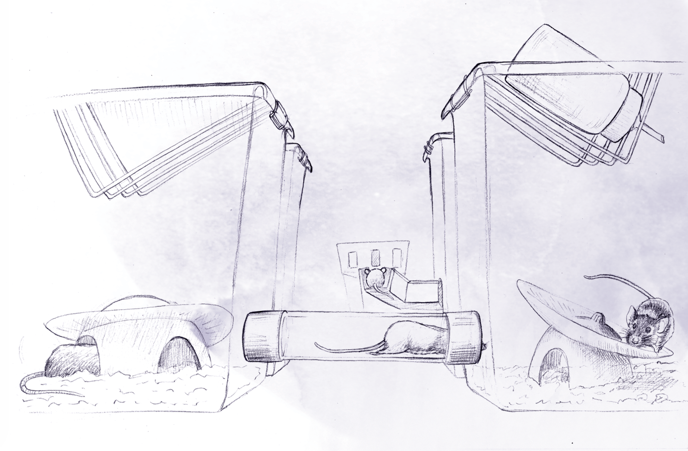
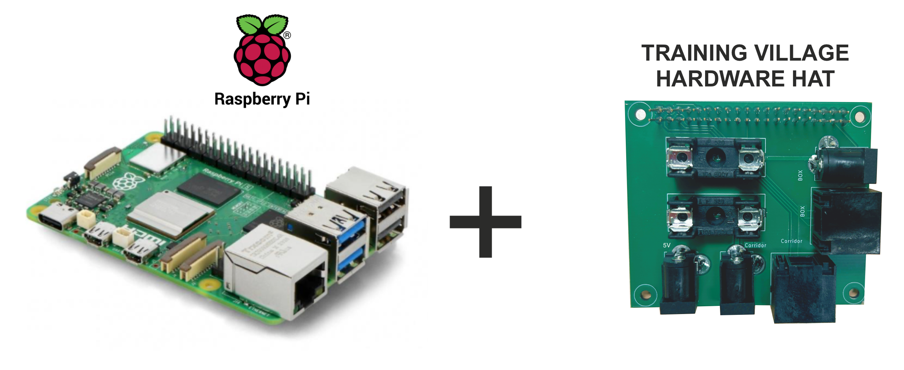
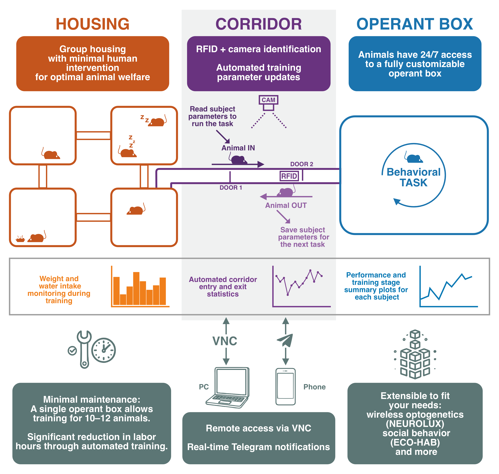
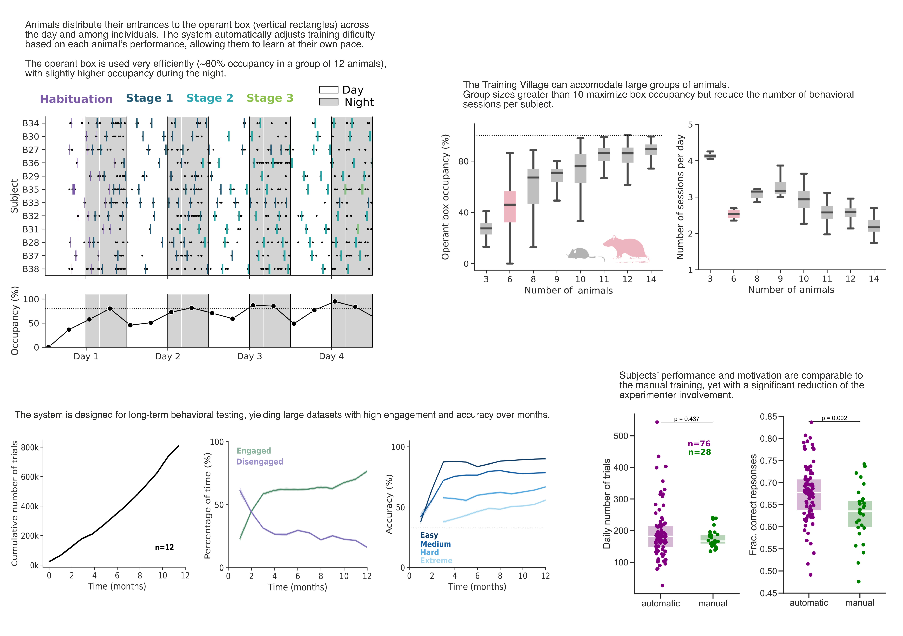
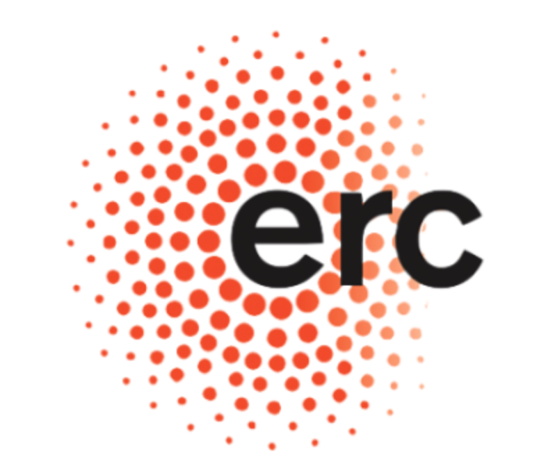
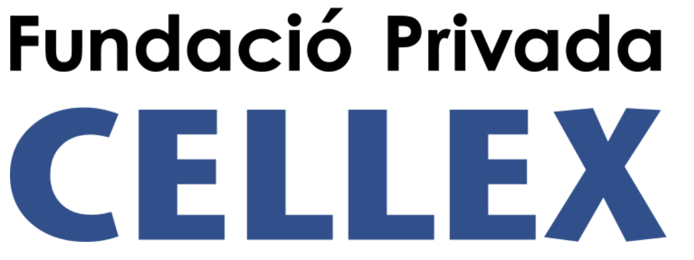

Welcome to The Training Village
Continuous testing of rodents in cognitive tasks
The Training Village is a system designed for the continuous, automated training of rodents in complex cognitive tasks. RFID-tagged animals live in groups and individually access an operant box to perform tasks at any time, 24/7.
|
 |
|
Watch the System in Action
How Does It Work?
|
 |
The system is managed by a Raspberry Pi, selected for its reliability, low power consumption, and efficiency. This core unit is equipped with a custom Plug-and-Play HAT (Hardware Attached on Top), which seamlessly connects all sensors and actuators within the corridor. |
Social Living & Identification — Animals reside in social groups within one or more home cages. When an animal enters the access corridor, the setup utilizes RFID identification and a video camera to recognize the subject. A precision dual-door mechanism, orchestrated by the Raspberry Pi, ensures a controlled, single-animal entry into the Operant Box.
The Training Session — Once the animal is inside, the task logic and hardware—such as behavioral water ports—are typically managed by Bpod or Arduino. Simultaneously, the Raspberry Pi performs real-time camera-based tracking, allowing the animal's position to trigger specific experimental events. Additionally, it provides the high-level processing power required for peripherals like touchscreens or sound cards, ensuring stimulus presentation with negligible latency.
Return & Data Synchronization — After the session, the animal returns to its social group. All data is automatically synchronized to a server or external drive, and the training parameters for that specific subject are updated. This ensures the animal advances through its training protocols without any manual intervention.
Modular & Extensible — The platform is built to grow with your research:

System Usage
The Training Village has been rigorously tested in the Brain Circuits and Behavior Lab across multiple cohorts of mice and three distinct behavioral paradigms: a three-choice visuospatial delayed response task, a two-choice visual or auditory perceptual discrimination task, and a two-armed bandit task. The system has been successfully adapted to rats in the Animal Minds Lab.

Citing Training Village
If you use Training Village, please cite:
Serrano-Porcar, B., Marin, R., Rodríguez, J., Barezzi, C., Vasoya, H., Kean, D., Pottinger, D., Taylor, A., Martínez Vergara, H., & de la Rocha, J. (2026).
The Training Village: an open platform for continuous testing of rodents in cognitive tasks.
bioRxiv. https://doi.org/10.64898/2026.01.12.698970
Developed by:
BRAIN CIRCUITS AND BEHAVIOR LABFunding was provided by the Spanish State Research Agency (AEI), the European Research Council (ERC), and the Cellex Foundation.

